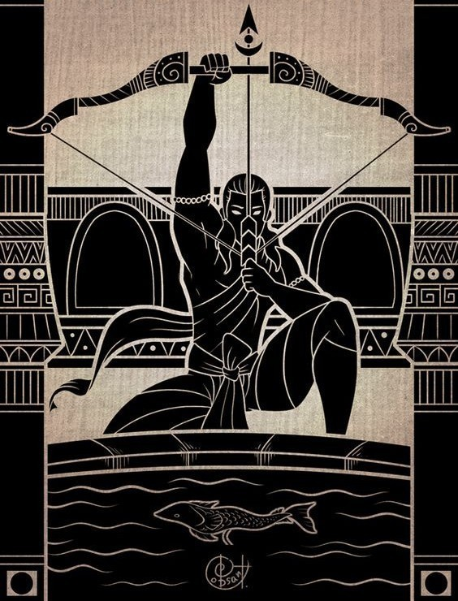

Meditations
Description : core principles

- Stay wary; all of life is a war and there exists no reason to deny
- Stay grounded against characteristics which are not possessed (when come across); analyse, understand and take in as much information as you can and contain patience towards time in preparing to equip it by self.
- On meeting despair or anxiety
- Recognise current feeling
- Recognise current state of mind
- Act to bring down the state of mind to moderate level
- Contemplate the reason for the excitation and come up with a counteracting argument to dispense the apprehension.
- We live to act; Action has to be conscientious (dutiful) based on conscience
- We are supposed to act with others in a way which we expect others to act towards us; consider the universality of action.
- Practice & Live in Moderation
- Ability to reason is what makes a man different from animal
- Every action & thought is supposed to be questioned for it's cause/origin , objective and it's compliance with the present instant of time & efficacy with which it is being carried upon
- Make aware oneself with all the possibilities but never expect the other to act on your expected lines; no matter how much closer one is; as long as it includes the other spirit it involves their level of truthfulness and morality as hidden vectors; which are never completely to trusted upon.
- Speak only what is asked/required of, not more & not less (when you are opening your mouth there should be a justifiable reason which is worthy enough the cost of silence.)
- One shall stay as warrior only when he fights & is capable of defending his pride
-
करम प्र ध्यान धेने से डर अपने आप दूर हो जायेगा
- Guiding the conscious through towards the desired goals with an intention in becoming unison with the unconscious to experience the truth.
- Attention is a prime tool which helps in operating the mental activity efficaciously. The ability to control the unconscious resides in temperately handling the attention of conscious actions. One which is given more attention will more likely have the unconscious attended. Unconscious is a great instrument in coming up with thoughts that err from normality.
- Not in any world shall one let have his control in the hands of others. It's a very strict no. It clearly means that you are handing over your life to someone and asking them to lead it by their wishes. It's sure that you will repent for doing it.
- If you are not able to do what you have decided to do then how will you ever become who you want to ?
- If you have missed a particular thought or failed to come with the best one needed of the time don't beat your head for it, accept and learn from it. If you can't accept defeat you can never learn.
- Silence is great weapon to have mastered. Grow strong enough to use it efficiently
- Contain the Patience to walk till the origin of the question. The more one can do such is his aptitude.
- Carry Moderation in Emotions & Actions. Every ones blood is red so neither of us is superior/inferior to others
- Always have mind in a state which is earnest to process information , contemplate and ready to take action.
- To emotions as alarms to hint about the context or add weight to it but not to submit oneself to it.
- Cardinal Virtues are
- Bravery
- Insight
- Self Control
- Justice
- Principles alone don't define a man; Actions are also to be considered.
- Cycle of Dhukka ( Despair / Anxiety)
- Truth of Dhukka - Is it for real or just a mere imagination
- Reason for Dhukka - To identity the cause / reason
- Is Dhukka because of inability to accept a change
- Is Dhukka due to faulty expectations
-
Dharma Chakra - Eight Principles of Buddhism
- Right Understanding
- Right Thought
- Right Speech
- Right Action
- Right Livelihood
- Right Effort
- Right Mindfulness / Cognition
- Right Concentration
- As I grow older, I see manliness as answer to all
- Take Responsibility
- Never Surrender to momentary gratifications
- Put Effort & Be Patient
- Fearlessness; Nothing can be done in fear
- In order to protect you should become the best to face the best
- No problem or task is hard; one just lacks the patience and resolve to break it down to pieces and then comprehend to arrive at the solution
- Inherently there always exists and personal opinion, don't cloud it, instead face the duality
- Don't get yourself used to experience happiness from outside the self, the more one does the more shall lose his self control
- Every decision should have it's origin from universally accepted beliefs (Axioms) to be reached by connected chain of logical arguments
- If you are fixing a prior to the opponent then you are inherently creating a weakness for yourself, don't judge till the end instead have all the information registered and have them analysed, only on confirmation should arrive at a conclusion.
- Bypassing reason behind the action is attempting a suicide.
- Don't be in a hurry to opine, take your own time.
- Unless you can't earn it , you don't deserve it
- If you are paying attention towards a person constantly for comparison it means that you are indirectly placing them above yourself. One should abstain from such acts.
- Stand firm with words & promises else one shall lose his value
- Without being aware of your own self how can you expect to accommodate other self. Learn and Master the self till you can rightly predict
- Always finish the work earliest rather than leaving it to unpredictable future
- Forgetting what you are ought to do is straying away from the present.
- The toughest dreams and personality demands toughest of hearts & toughest sacrifices & greatest efficiencies of the trinity(mind,body,soul).
- Stay Calm, put effort to think about every thought/activity/impulse that comes across the mind be patient in unfolding and segregating each and every emotion that is/trying to occupying/occupy certain part of your mind.
- Current Box - If the thought/activity is in compliance with the current activity/goal you are occupied with.
- Not Now Box - If the thought/activity doesn’t comply with the current activity/goal which is in process.
- Junk Box - If the thought is arising out of some past shades / irrational beliefs
- To be the truest to the self, never lie/ convince yourself no matter what the thought/activity may be.
- When involuntarily unnecessary thoughts spring in mind just self that they are born out of the past beliefs & actions.
- Engagement with thought/activity is essential as it alters the amount of brain faculty that gets allocated which usually is commensurate with the compliance between agent & thought.
- Stay close to the self & never forget who you are & where you came from.